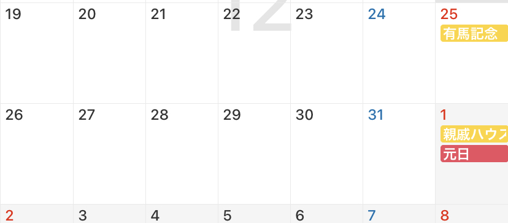

はじめに
誰！？
- おなまえ
-
サ^n
さかち
さかちゃん 等 - みす
- 53代CG研会長の老人
- 最近何をしているの？
- なぜかWebデザイナー兼コーダーの会社員になった
- 元気？
- 超元気！！
- オタク？
- 超オタク！！
今年の激熱オタクトピックは スパイダーマンノーウェイホーム・ トップガンマーヴェリック ・ ピースメイカー（ドラマ版）・ スラムダンク・ ワンピース(ワノ国編終わったからそろそろみんないい加減読んでくれないか？)・ 半間修二・ TRPG（一緒に遊んでくれてありがとう） あたりでしたが、話し出すと300000字かけてしまうので割愛。
日記要素
地元友人M
──その日私は地元友人Ｍと二人で日比谷クリスマスマーケットに行き素敵なディナーをいただく予定になっていた。
M
地元友人Ｍ
-
徒歩５分の場所に住んでいる小、中、高が同じ友人
-
オタクだけど本当に美人で部屋がきれいで良いにおいがする
-
クリスマスに男の子をデートに誘い、クリスマスマーケットとディナーを自分持ちで予約していたにも関わらずその計画が前日に潰れた絶望の人
-
しかも予約前日キャンセル代を自分の分払うという発想が相手にないのか意図的かは知らないが払ってはもらえなかった（絶望）
-
しかも前回その男と遊んだ際、財布を男が忘れたと言ったため全額出した（絶望）
きれいなイルミネーションが見られるらしい予約された素敵なクリスマスマーケットとディナー！しかし行く相手のいないと嘆く可愛い女！行くしかない私が一緒に
12月18日 気づき
すご～い！
きれ～い！
いやこれ…… ク リ ス マ ス じゃん（ここでようやく気づいた）
正直サンタさんからのプレゼントは望めず、会社からボーナスを支給済みでほしいものをあらかた自分で買ってしまった私にとってのクリスマスは12月末ではなく楽天スーパーセールとともに終了していたのだった。
これは楽天スーパーセールで購入した世界一可愛いスニーカーへのリンクそして再認識
え？つまり今年もうあと2週間しかないじゃん
父と有馬記念に行くこと以外の予定が何もない人のカレンダー、白すぎないか？（12/22追記：観覧チケットが取れていなかったのでこの予定もなくなりました。南無）
おい！待ってくれよ！みんな！おいていかないでくれ！私だけを2022年に！
でも気が付いたらあと2週間っ！2週間しかない……っ！
2022年、このまま終わるのか……？

ん……？こ、この光は！？

安西先生！！

その通りだ……
つまり希望を捨てて諦めたら2022年はそこで終了する……。
最後の最後まで私はあがくぞ……！
忘年会で年を忘れた人たちに年を思い出させてもう一度忘れさせ
クリスマスのケーキを予約し
2022年の間につみたてＮＩＳＡを始め
クレカの解約をし
そして、アドカレを書く。
作れ！Webサイト！
何を書くの？
私に書けることって何だろう？
私がこの一年何をしてきたかというと、ここまで見ていた頂いた方はお気づきかもしれないがWebサイトを作ることだ。あとオタクだ。
じゃあWebサイトを作ろう！
なおサーバーの立て方は分からないのでgithubくんに無理をしてもらってこのページを動かしています。
去年作ったページ
去年ノリで初めて（れしいさんの多大な協力の元）作ったページがあるので見てみよう！ちなみに入ってる文章はそれっぽいサイトにしたくて一生懸命考えました。
……いいやん。
新しく作ったページ
でも折角だから今2022年12月の私が作った私の絵が沢山乗ったページも見たくないか？
あとがき
反省点
- 申し込みが遅すぎた。 12月19日に書き始めたアドカレに遅刻も何もあるのかはわからないがとにかく遅かった。アホ。原因はSNS離れであると考えられる。もう少し見ましょう。
- 申し込みが遅いくせに内容を欲張りすぎ。 着地点を考えてからサイトは作ろうよ。じゃないとあとからいちいちサイドバーのリンク増やしたりめんどくさいんだよ。
- 最近ScssやBEM（コードの書き方らしい）を取り入れてみようとしている最中だったので結果的に人に見せられるもんじゃない一貫性のないコードになってしまった。ま～た汚いコード書いて！こらッ！あとhoverでつけるのが好きすぎでモバイルファーストな世界になじめない。
- 有馬記念のチケットの申し込みを忘れていた。 お前はいつもそう。全ての申し込みが期限内に出来ないし、出来たとしても大概チケットの日付を間違えている。今年の映画チケット日付間違い当日に気づいて買いなおす行為の被害総額、万単位いってる気がする。
良かった点
- ぎりぎりにでもアドカレに申し込めて良かった。ありがとうアドカレを立ててくれたオダマキくん
- テレビでも有馬記念を見れた。ありがとう作業を見守ってくれた有馬記念のテレビ観戦を共にしてくれたディスコードの皆さん。
- 忘年会をしたいとごねることにより忘年会が発生した。また、ごねていたら新年会にも混ぜてもらえることになった。ここなつちゃんとササミちゃんに感謝。
- ビールがおいしい。 今年の夏サカモトらと旅行に行った所、クソ暑清水寺を下った茶屋でもプレモル、USJのバタービール売り場の真横でもプレモル、当然ご飯時はプレモル、というプレモル三昧を楽しんだ所、ビールを愛せるようになった。
- 久しぶりに聞いたらSuchmosが良い。何言ってるか英語か日本語かも分からないので作業BGMに最適
さいごに
おしゃべりするのがだ～いすきだしお酒を飲むのがだ～いすきだしどこで遊ぶのもだ～いすきなのでいつでもまた呼んでやってください。働いていますが夜なら平日もあらゆるタイミングでご飯に行けるし有休も別にいつでも取れるので。
そう、世界が終わるまでには……
わ～！